切换旋转中心不瞬移：支点补偿变换矩阵与直接改 Pivot 选型 FAQ
3 分钟看懂为什么动画中途修改旋转中心会让物体瞬移，10 分钟复刻世界坐标零跳变的双锁扣支点交接机构。
① 📌 核心结论速览
- 绕局部支点 $\mathbf{p}$ 旋转的三明治矩阵 $\mathbf{T}(\mathbf{t})\mathbf{T}(\mathbf{p})\mathbf{R}(\theta)\mathbf{T}(-\mathbf{p})$ 把支点坐标与旋转角耦合进了世界平移项。 展开后，任意局部顶点 $\mathbf{v}$ 的世界坐标为 $\mathbf{x} = \mathbf{t} + (\mathbf{I} - \mathbf{R}(\theta))\mathbf{p} + \mathbf{R}(\theta)\mathbf{v}$。只要当前旋转角 $\theta_0 \ne 0$，直接把支点从 $\mathbf{p}_1$ 改成 $\mathbf{p}_2$ 就会造成瞬间世界跳变。
- 精确平移补偿公式 $\mathbf{t}_2 = \mathbf{t}_1 + (\mathbf{R}(\theta_0) - \mathbf{I})(\mathbf{p}_2 - \mathbf{p}_1)$ 将交接跳变从
1.6069 u降为实测0。 在t = 3.0 s（交接角 $\theta_0 = 36^\circ$、双锁扣跨距 $\Delta p = 2.6$）切换支点瞬间，未补偿基线瞬间向右下瞬移1.6069示意单位，而补偿模式在交接前后的世界坐标跳变仅2.87e-15示意单位（浮点舍入级）。 - 直接仿射向量补偿与 4 个 3×3 齐次矩阵链式连乘逐位等价。 两种求解器在全部负载下的最大坐标差为
0，8192 次变换计算中位数为0.96 ms对比7.80 ms（快8.15×）。 - 58 实体双锁扣步进横梁工作台，13 项本机实测验收。 场景为
synthetic；仿射补偿与 Node CPU 耗时为measured；Dream2Flow视频三维物体流提取与机器人点云重抓握力控为not_measured。

每日能力方向核验： Dream2Flow: Bridging Video Generation and Open-World Manipulation with 3D Object Flow（arXiv:2512.24766，2025-12-31 提交）与 Synthesizing Grasps and Regrasps for Complex Manipulation Tasks（arXiv:2501.18075，2025-01-30 提交）均指出：在多阶段枢轴旋转（Pivoting）与重抓握（Re-grasping）操纵中，物体的瞬时旋转轴（Screw Axis / Pivot）会随阶段切换；在三维场景图或动画控制器中切换有效支点时，必须维持交接时刻的 $C^0$ 世界位姿连续性。2026-11-10 核验原文；本例仅实现确定性支点平移补偿，未运行视频生成或点云抓握规划。
② 🎯 客户与架构师灵魂拷问 Q&A
Q1 何时选视频三维物体流/机器人抓握模型，何时选确定性支点平移补偿？
当需要从单张图像和人类语言指令推理未知物体该如何翻动、在哪里换手重抓时，可评估 Dream2Flow 或点云重抓握规划算法。
当在 Three.js、Blender、CSS 3D (transform-origin) 或工业数字孪生中实现双销交替步进机构、翻盖多级铰链、机械手抓取放回（Parent Switching）、或允许用户在已旋转组件上拖动旋转中心手柄时，确定性支点平移补偿公式是保证画面绝不瞬移的唯一数学法则。
Q2 在什么约束下支点平移补偿比直接改 pivot / transform-origin 严格更优？
只有当物体当前旋转角严格等于 $0^\circ$（$\mathbf{R}(\theta_0) = \mathbf{I}$）时，直接修改 pivot 才不会改变世界位置。
一旦物体已经旋转了 $\theta_0 \ne 0$（例如第一阶段绕左销轴旋转了 $36^\circ$），直接把 pivot 从左端 $(-1.3, 0)$ 改为右端 $(+1.3, 0)$ 会导致整根横梁瞬间跳飞 $2 |\Delta\mathbf{p}| \sin(\theta_0/2) = 2 \times 2.6 \times \sin(18^\circ) = 1.6069$ 示意单位！在一切多阶段铰链交接和非破坏性枢轴编辑中，支点平移补偿严格更优。
Q3 底层管线如何用三行线性代数消除支点交接跳变？
写出交接瞬间 $\theta = \theta_0$ 时同一个局部点 $\mathbf{v}$ 在旧支点 $(\mathbf{t}_1, \mathbf{p}_1)$ 与新支点 $(\mathbf{t}_2, \mathbf{p}_2)$ 下的世界坐标，并令两者相等：
$$\mathbf{t}_1 + \mathbf{p}_1 + \mathbf{R}(\theta_0)(\mathbf{v} - \mathbf{p}_1) = \mathbf{t}_2 + \mathbf{p}_2 + \mathbf{R}(\theta_0)(\mathbf{v} - \mathbf{p}_2)$$
注意等式两边的 $\mathbf{R}(\theta_0)\mathbf{v}$ 项完全与 $\mathbf{v}$ 无关地自动消去！移项即得对全物体所有顶点同时成立的唯一平移补偿量：
$$\mathbf{t}_2 = \mathbf{t}_1 + (\mathbf{R}(\theta_0) - \mathbf{I})(\mathbf{p}_2 - \mathbf{p}_1)$$
代入本例二维旋转 $\theta_0 = 36^\circ$、$\Delta\mathbf{p} = (2.6, 0)$、$\mathbf{t}_1 = (0, 0)$：
$$t_{2,x} = (\cos 36^\circ - 1) \times 2.6 = -0.4965, \quad t_{2,y} = \sin 36^\circ \times 2.6 = +1.5282$$
补偿向量的模长 $\sqrt{(-0.4965)^2 + 1.5282^2} = 1.6069$ 恰好抵消了未补偿基线的瞬移量！
Q4 十分钟如何复刻？
npm run dev后打开/demos/pivot-reanchor-crane/，默认停在交接时刻t = 3.00 s（$\theta_0 = 36^\circ$、锁扣跨距2.6）。- 在支点平移补偿模式（
compensated）下，在2.98 s与3.02 s之间来回拖动滑块：0–3 s绕左侧锁座旋转，3.0 s交接瞬间右端销轴精准落入右上橙色锁座（handoff pop = 0.0000 u），3–6 s改为绕右上锁座反向旋转。 - 切换到直接改支点基线（
uncompensated）：在t = 3.00 s处，前景横梁瞬间脱离右上锁座，向右下跳飞1.6069 u。 - 修改锁扣跨距（
1.4–3.4）、交接角（15°–65°）与终态角（-55°–45°）；若输入越界跨距5.0，系统原子拒绝并保留有效配置。 - 点击导出
PIVOT_COMPENSATION_SPEC.json，核验补偿平移向量translation与世界矩阵。 - 运行
npx vitest run tests\pivot-crane.test.ts；构建并在 4335 端口预览后执行node scripts\benchmark-pivot-crane.mjs。
③ 🧭 直观可视化图解
④ 📊 Architect Decision Matrix
| 评估维度 | 直接修改 pivot / transform-origin (uncompensated) |
4×4 齐次矩阵逆乘重挂接 (M_new = P_2^-1 M_old) |
本例闭式仿射向量补偿 (compensated) |
视频物体流重抓握 (Dream2Flow) |
|---|---|---|---|---|
t=3.0s（$\theta_0=36^\circ$）交接瞬移量 |
瞬间跳变 1.6069 示意单位 |
0 跳变 |
实测 2.87e-15 示意单位（浮点级零跳变） |
依赖轨迹优化收敛精度 |
| 公式可解释性与参数解耦 | 丢失旋转耦合项 $(\mathbf{R}-\mathbf{I})\Delta\mathbf{p}$ | 矩阵链连乘，需分解回 TRS | 显式给出平移增量 $\Delta\mathbf{t} = (\mathbf{R}(\theta_0)-\mathbf{I})\Delta\mathbf{p}$ | 用于高层视觉动作规划 |
| 8192 次变换 Node CPU 耗时中位数 | 快（但位置错误） | 7.80 ms（4 矩阵齐次连乘开销） |
0.96 ms（比 4 矩阵连乘快 8.15×） |
需秒级视频扩散与流提取 |
| 任意时间轴拖拽与逆序重访 | 跨 3.0s 时发生视觉闪烁跳变 |
确定性连续 | 正逆序跨越交接点完全平滑无跳变 | 需预计算整段轨迹 |
| 适用工程场景 | 仅限未旋转（$\theta=0$）初始设置 | 复杂深层嵌套骨骼父子切换 | 双销步进机构、多铰链翻盖、3D 枢轴手柄 | 开放世界机器人视觉操纵 |
定量算例： 双锁扣局部坐标分别为 $p_{1,x} = -1.3$ 与 $p_{2,x} = +1.3$（$\Delta p_x = 2.6$）。当横梁绕左锁扣逆时针转至 $\theta_0 = 36^\circ$ 时，瞬移弦长公式给出 $2 \times 2.6 \times \sin(18^\circ) = 5.2 \times 0.309017 = 1.606888$ 示意单位。写入补偿平移 $\mathbf{t}_2 = (-0.4965, +1.5282)$ 后，交接前后的世界坐标差降为 2.87e-15 示意单位。
⑤ 🧪 全新 Demo 与 Benchmark 核心发现（含 7-Card）
封存数据记录了 58 个三维实体、t = 3.0 s 支点交接瞬间的连续性核验，以及直接仿射向量补偿与 4 个 3×3 齐次矩阵链式连乘求解器的等价性与耗时对照。两种求解方式在全部负载下的最大坐标差为 0。
| Node CPU 支点变换查询数 | 直接仿射向量补偿中位数 | 四矩阵齐次链式连乘中位数 |
|---|---|---|
| 128 | 0.19 ms | 0.45 ms |
| 1024 | 1.29 ms | 3.21 ms |
| 8192 | 0.96 ms | 7.80 ms |
每档负载在预热后按交替顺序重复 7 次，记录 Node CPU 耗时中位数（不含 WebGL 渲染）。注意：在 8192 次批量下，V8 JIT 对无数组分配的直接仿射路径完成了内联优化（0.96 ms 对比 4 矩阵分配连乘 7.80 ms，快约 8.15×），而在 1024 次档位两路径刚触发 JIT 编译转换，原始样本均完整保留于 report.json。
中文七卡 · English。画面为 synthetic，仿射变换与 CPU 计时为 measured；Dream2Flow 视频三维物体流与机器人点云抓握力控为 not_measured。
⑥ 🛠️ Architect Checklist
- 绝不在物体已旋转（$\theta_0 \ne 0$）或已缩放状态下仅修改
pivot/transform-origin而不补偿平移。 - 在切换局部支点 $\Delta\mathbf{p} = \mathbf{p}_2 - \mathbf{p}_1$ 的同一原子帧内，更新平移向量 $\mathbf{t}_2 = \mathbf{t}_1 + (\mathbf{R}(\theta_0) - \mathbf{I})\Delta\mathbf{p}$。
- 若同时包含非均匀缩放 $\mathbf{S}$，按完整三明治展开式 $\mathbf{t}_2 = \mathbf{t}_1 + (\mathbf{R}\mathbf{S} - \mathbf{I})\Delta\mathbf{p}$ 计算补偿。
- 在自动化测试中采样交接时刻左右无穷小邻域（$t_{\text{switch}} - \epsilon$ 与 $t_{\text{switch}}$），验证所有关键顶点世界位移
< 1e-12。 - 验证交接后（$t > t_{\text{switch}}$）新支点 $\mathbf{p}_2$ 在世界坐标系中保持静止不动。
- 用完整的 4 矩阵齐次连乘 $\mathbf{T}(\mathbf{t})\mathbf{T}(\mathbf{p})\mathbf{R}(\theta)\mathbf{T}(-\mathbf{p})$ 与直接仿射公式做独立交叉核验。
- 对锁扣跨距、交接角与终态角执行参数边界校验，对越界参数执行原子拒绝。
- 验证正序与逆序拖拽时间滑块跨越交接点时，导出的世界变换矩阵完全一致。
- 区分确定性场景图支点补偿与视觉抓握点规划（如
Dream2Flow），各司其职。 - 未执行的视频物体流重建、点云力闭合分析与接触摩擦仿真统一标注为
not_measured。
一手来源： Dream2Flow (arXiv:2512.24766)（2025-12-31 提交）通过三维物体流将生成视频中的物体运动转化为机器人操纵轨迹；Synthesizing Grasps and Regrasps (arXiv:2501.18075)（2025-01-30 提交）将复杂枢轴翻动形式化为分段常旋量运动与重抓握切换。2026-11-10 核验；本例为原创确定性支点平移补偿测试台，未运行上述视觉与抓握模型。